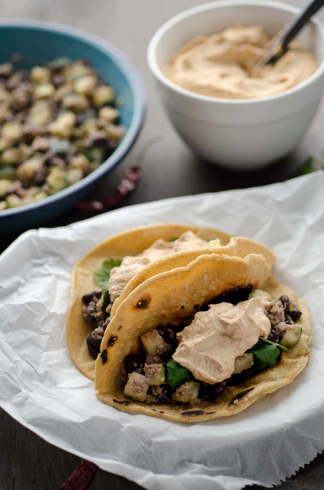

Spicy Zucchini and Black Bean Tacos

Description
These spicy zucchini and black bean tacos are delicious, protein packed, and very easy to make. Simply sauté
onion and garlic, then add the zucchini and the black beans. They are topped with a chile de arbol almond sauce,
which gives this dish a decadent and creamy touch. Serve on warm corn tortillas. Enjoy!
Ingredients
Filling
- 1 tbsp. Vegetable oil optional
- ½ White Onion thinly sliced
- 3 cloves Garlic minced
- 2 Mexican zucchini large, diced
- 1 can (14.5 oz) Black beans drained
Chile de Arbol Sauce
- 2 - 4 Chile de Arbol, dried
- 1 cup Almonds raw
- ½ Onion white, large
- 3 cloves Garlic unpeeled
- 1 ½ cups Vegetable Stock Warm
- 2 tsp. White or champagne vinegar
Steps
- Heat vegetable oil to medium heat in a large sauté pan. Add onion and sweat for 2-3 minutes or until the
onion is tender and translucent.
- Add the garlic cloves and cook for 1 minute.
- Add the zucchini and cook until tender, about 3-4 minutes. Add the black beans and mix well.
- Let cook for 1 minute more. Season with salt and pepper.
- To make the sauce: heat a griddle, comal, or cast iron pan to medium-high heat. Toast chiles on each side
until lightly toasted, about 30 seconds on each side. Remove from pan and set aside.
- Add the almonds to the pan and toast until golden, about 2 minutes. Remove from pan and set aside.
- Toast the onion, and the garlic until slightly charred, about 4 minutes on each side.
- Place the almonds, onion, garlic, and chiles in the blender. Add the warm vegetable stock and 2 tsp. of
vinegar. Process until smooth. Season with salt and pepper. Sauce should be thick and creamy.